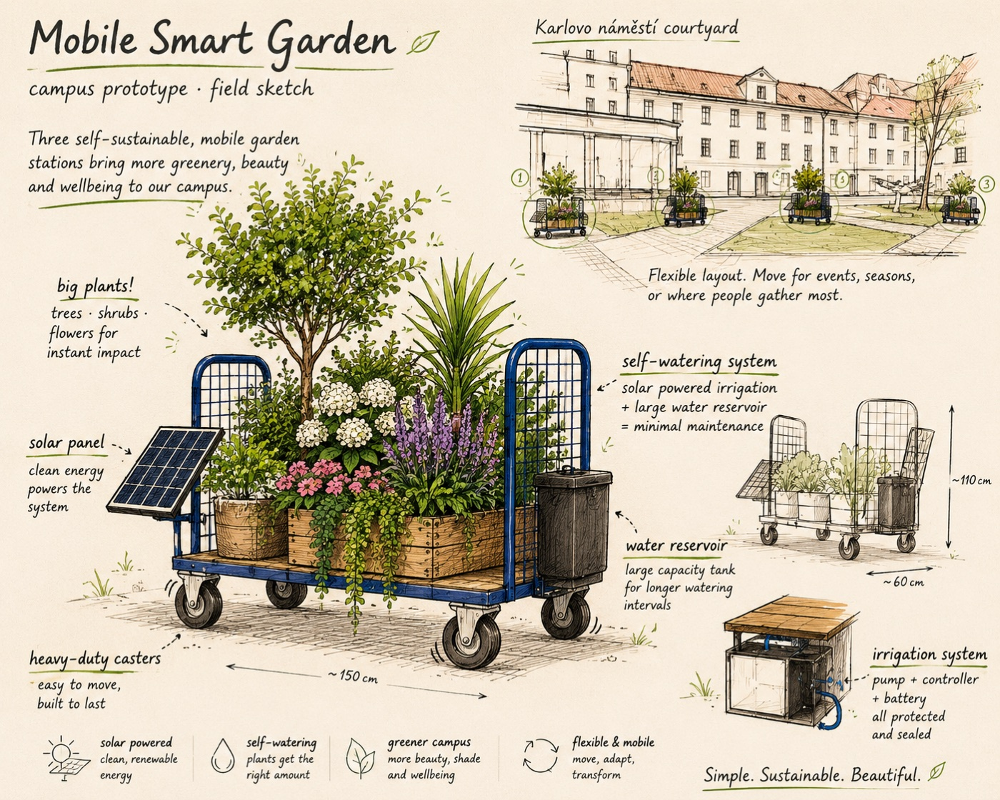

Campus Prototype · Autumn 2026
Self-Sustainable Smart Mobile Gardens
Three mobile planter units carrying trees, shrubs and flowering plants, with autonomous solar-powered irrigation. Designed to bring greenery to the Karlovo náměstí courtyard without construction work.

The idea
An underused courtyard, put to better use
The Karlovo náměstí courtyard is a space that students and staff mostly walk past. These mobile gardens are a low-risk way to change that. Each unit is self-contained: a sturdy cart, an irrigation system, a water reservoir and a solar panel that runs it all. The plants thrive with little maintenance, and nothing about the courtyard has to be altered.
Because the units are on wheels, the layout can be reconfigured for events and seasons, or simply rolled to wherever it makes the most difference. Unlike traditional landscaping, the effect is immediate — the gardens arrive fully planted and improve the space from the first day.
How it works
Solar in, water out
A solar panel charges a battery, which drives a small irrigation pump drawing from the on-board reservoir. The whole cycle runs on its own, so no extra work falls on staff and the plants stay watered between refills.
- Automatic watering
- Scheduled irrigation keeps plants healthy with minimal effort.
- Solar powered
- The panel and battery run the system without mains electricity.
- Water reservoir
- An on-board tank stretches the interval between refills.
- Built for big plants
- A heavy-duty cart carries trees, shrubs and large planters.
- Moves easily
- Caster wheels let two people reposition a fully loaded unit.
- No construction
- Nothing is fixed to the ground; the courtyard stays as it is.

The pilot
Three units to start
The pilot introduces three units to the courtyard, each with a different plant composition. It is a practical, flexible way to add greenery and test how the gardens are used before going further.
Each cart is named after a woman in the history of computing and carries a QR code linking here, so anyone passing by can read about the project and the person it is named for.
Schedule
From parts to planted
-
August 2026
Purchase materials and equipment; select suitable plants and containers.
-
August / September 2026
Assemble the three carts, install the irrigation systems and test them.
-
September 2026
Plant, run final tests, deploy in the courtyard, then monitor and maintain.
Budget
What it costs
Three identical units, funded entirely from material costs. Most of the budget goes to the carts, plants, containers and irrigation equipment, all of which stay in use for years.
30,000 Kč
Total for three units · no scholarships or remuneration.